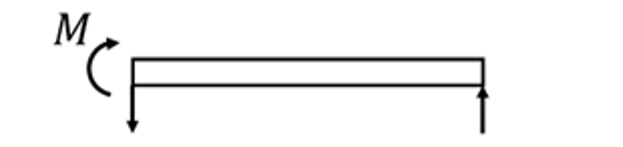
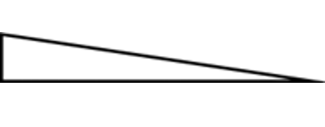
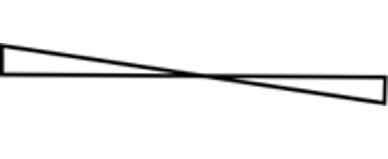
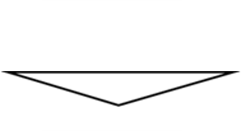
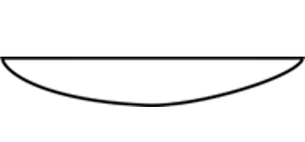

4 Stål
Det är konstigt att det inte går att få in text här. Det borde inte vara så konstigt att få till det, det är trots allt bara löptext i sammanhanget.
4.1 Introduktion
Brandteknisk dimensionering av stålkonstruktioner kräver förståelse för hur materialegenskaper förändras vid förhöjda temperaturer samt hur laster ska hanteras i brandfallet.
Beräkningarna är ofta iterativa och lämpar sig därför väl för numeriska verktyg som exempelvis Excel eller Python.
4.1.1 Dimensioneringsstrategier
Eurokod anger tre strategier:
- dimensionering i hållfasthetsdomänen
- dimensionering i tidsdomänen
- dimensionering i temperaturdomänen
Val av metod beror på:
- tillgänglig information
- konstruktionens komplexitet
- krav på noggrannhet
4.1.2 Gemensamma delar
Oavsett metod krävs:
- temperaturberäkning
- tvärsnittsklassificering
- lastberäkning
4.2 Temperaturutveckling i stål
Temperaturen i stålet är avgörande för bärförmågan vid brand. Vid förhöjda temperaturer reduceras både hållfasthet och styvhet, vilket innebär att en korrekt temperaturberäkning är en förutsättning för dimensionering.
Beräkningar av temperaturutveckling görs vanligtvis iterativt och lämpar sig därför väl för beräkning i exempelvis Excel eller motsvarande verktyg. Temperaturutvecklingen i stål bestäms stegvis över tiden. En typisk beräkning kan struktureras enligt tabellen nedan.
| Tidssteg | Brandtemperatur | Ståltemperatur | Material | Temperaturändring |
|---|---|---|---|---|
| \(t_0\) | \(T_{f,0}\) | \(T_{s,0}\) | \(c_{s,0}(T_{s,0})\) | \(\Delta T_{s,0}\) |
| \(t_1 = t_0 + \Delta t\) | \(T_{f,1}\) | \(T_{s,1} = T_{s,0} + \Delta T_{s,0}\) | \(c_{s,1}(T_{s,1})\) | \(\Delta T_{s,1}\) |
| \(t_2 = t_1 + \Delta t\) | \(T_{f,2}\) | \(T_{s,2} = T_{s,1} + \Delta T_{s,1}\) | \(c_{s,2}(T_{s,2})\) | \(\Delta T_{s,2}\) |
| \(\ldots\) | \(\ldots\) | \(\ldots\) | \(\ldots\) | \(\ldots\) |
| \(t_n = t_{n-1} + \Delta t\) | \(T_{f,n}\) | \(T_{s,n} = T_{s,n-1} + \Delta T_{s,n-1}\) | \(c_{s,n}(T_{s,n})\) | \(\Delta T_{s,n}\) |
Tabellen fylls i rad för rad där varje tidssteg bygger på föregående.
\(T_{f,i}\) är brandtemperaturen, \(c_{s,i}(T_{s,i})\) är den specifika värmen i stålet vid temperaturen \(T_{s,i}\) och temperaturändringen, \(\Delta T_{s,i}\) beräknas för oskyddat stål som
\[ \Delta T_{s,i}=k_{sh}\frac{A_m/V}{\rho c_{s,i-1}}\left(\varepsilon \sigma \left( \left(T_{f,i}+273\right)^4-\left(T_{f,i}+273\right)^4 \right)+h_c\left(T_{f,i}-T_{s,i-1}\right)\right)\Delta t \]
4.3 Ståltemperatur vs standardbrand
[Lägg in interaktiv figur med ståltemperaturer i förhållande till sektionsfaktor och isoleringstjocklek]
4.3.1 Skyddat stål
När det kommer till skyddat stål ändras förutsättningarna. \[ \Delta T_s = \frac{A_m/V}{\rho c} (T_g - T_s)\Delta t \]
där:
- \(A_m/V\) är sektionsfaktorn
- \(\rho\) är stålets densitet
- \(c\) är temperaturberoende specifik värme
- \(T_g\) är brandgastemperaturen
- \(T_s\) är ståltemperaturen
4.3.2 Iterativ beräkning
Beräkningen genomförs enligt följande:
- Sätt initial temperatur (\(T_s = 20^\circ C\))
- Bestäm brandgastemperatur \(T_g\)
- Beräkna temperaturökning \(\Delta T_s\)
- Uppdatera ståltemperatur
- Upprepa för nästa tidssteg
4.3.3 Sektionsfaktor
Sektionsfaktorn definieras som:
\[ A_m/V = \frac{\text{exponerad yta}}{\text{volym}} \]
För slutna profiler kan sektionsfaktorn approximeras som:
\[ A_m/V \approx \frac{1}{t} \]
där \(t\) är godstjockleken.
4.3.4 Skyddat stål
För isolerade stålprofiler påverkas temperaturutvecklingen även av isoleringens egenskaper såsom:
- värmeledningstal
- isoleringstjocklek
- densitet
- specifik värme
Detta leder till en reducerad temperaturökning jämfört med oskyddat stål.
4.3.5 Kommentar
Temperaturberäkningen är en iterativ process där små förändringar i parametrar kan ge stora utslag i resultatet. Tabellen ovan utgör därför ett praktiskt verktyg vid dimensionering.
4.4 Tvärsnittsklass
Tvärsnitt klassificeras enligt Eurokod i klass 1–4.
4.4.1 Betydelse
- Klass 1–2 → plasticitet möjlig
- Klass 3 → elastisk analys
- Klass 4 → effektivt tvärsnitt
4.4.2 Vid brand
Materialparametrar reduceras:
- sträckgräns
- elasticitetsmodul
Förenkling:
\[ \varepsilon_\theta \approx 0.85 \varepsilon \]
4.5 Hållfasthet vid brand
Materialets hållfasthet reduceras med temperaturen.
4.5.1 Reduktionsfaktorer
\[ f_{y,\theta} = k_y(\theta) f_y \]
\[ E_\theta = k_E(\theta) E \]
4.5.2 Kritisk temperatur
Konstruktionen är säker om:
\[ \eta_{fi} \leq k_y(\theta) \]
För balkar kan kritisk temperatur approximeras till:
\[ \theta_{cr} \approx 540^\circ C \]
För pelare är den lägre (~500°C).
4.6 Balkar vid brand
4.6.1 Utan vippning
För balkar i tvärsnittsklass 1 och 2 gäller att momentkapaciteten beräknas med antagande om plasticitet enligt
\[ M_{Rd,fi} = k_{y,T}f_yW_{pl} \]
För tvärsnittsklass 3 gäller istället att momentkapaciteten beräknas med antagande om elasticitet enligt
\[ M_{Rd,fi} = k_{y,T}f_yW_{el} \]
4.6.2 Med vippning
Vippning kan betraktas på samma sätt som en balk där den tryckta flänsen fungerar som en pelare. Vid beräkning av bärförmågan måste därför reduktionsfaktorn \(\chi_{fi,LT}\) beaktas för att ta hänsyn till instabilitetsfenomen. Valet mellan plastiskt och elastiskt tvärsnittsmodulvärde, \(W_{pl}\) respektive \(W_{el}\), beror på tvärsnittsklassen.
\[ M_{Rd,fi}=\chi_{fi,LT} k_{y,T} f_y W_{el/pl} \]
där \(\chi_{fi,LT}\) beräknas enligt
\[ \chi_{fi,LT}=\frac{1}{\phi_{LT}+\sqrt{\phi_{LT}^2-\bar{\lambda}_{fi,LT}^2}} \]
där
\[ \phi_{LT}=\frac{1}{2}\left(1+\alpha \bar{\lambda}_{fi,LT}+\bar{\lambda}_{fi,LT}^2\right) \]
och
\[ \alpha=0,65\sqrt{\frac{235}{f_y}} \]
Utöver det ska slankheten, \(\bar{\lambda}_{fi,LT}\), beräknas beroende på slankheten i kallt tillstånd, \(\bar{\lambda}_{LT}\), samt \(k_{y,T}\) och \(k_{E,T}\) vid förhöjd temperatur enligt
\[ \bar{\lambda}_{fi,LT}=\bar{\lambda}_{LT}\sqrt{\frac{k_{y,T}}{k_{E,T}}} \]
där slankheten i kallt tillstånd, \(\bar{\lambda}_{LT}\), beräknas som
\[ \bar{\lambda}_{LT}=\sqrt{\frac{f_y W_{el/pl}}{M_{cr}}} \]
Antagande om elasticitet eller plasticitet beror på tvärsnittsklass. kritiska momentet \(M_{cr}\) beräknas enligt
\[ M_{cr}=C_1 \pi^2 \frac{E I_z}{\left(k_z L\right)^2} \sqrt{\left(\frac{k_z}{k_w}\right)^2 \frac{I_w}{I_z}+ \frac{\left(k_z L\right)^2 G I_t}{\pi^2 E I_z}+ \left(C_2 z_g \right)^2}- C_2 z_g \]
För en balk som är statiskt sammanhållen med det bjälklag som den bär kan lasten normalt antas vara applicerad i rotationscentrum. Då \(z_g\) representerar avståndet mellan rotationscentrum och den höjd där lasten kan antas vara applicerad på balken kan termerna \(\left(C_2z_g\right)^2\) och \(C_2 z_g\) antas vara noll. \(k_z\) och \(k_w\) fungerar på samma sätt som \(\beta\) för pelare, då de reducerar knäcklängden. Det är lämpligt att anta \(k_z\) = \(k_w\) = 1 för att vara på säkra sidan. Ekvationen ovan kan då förenklas till
\[ M_{cr}=C_1 \pi^2 \frac{E I_z}{L^2} \sqrt{\frac{I_w}{I_z}+ \frac{L^2 G I_t}{\pi^2 E I_z}+ } \]
där \(I_z\) är yttröghetsmomentet kring den svaga axeln, \(I_w\) är välvstyvhetens tvärsnittsfaktor (ofta betecknad \(K_w\) i svensk litteratur), och \(I_t\) är vridstyvhetens tvärsnittsfaktor (ofta betecknad \(K_v\) i svensk litteratur). \(G\) är vridstyvheten, \(L\) är balkens längd och \(E\) är elasticitetsmodulen för stål. \(C_1\) kan tas från nedanstående tabell beroende på upplag och lastsituation.
| Upplag och lastsituation | Momentfördelning | \(M_{max}\) | \(C_1\) |
|---|---|---|---|
| \(M\) | 1,00 | ||
 |
 |
\(M\) | 1,77 |
 |
\(M\) | 2,60 | |
 |
\(\frac{FL}{4}\) | 1,35 | |
 |
\(\frac{qL^2}{8}\) | 1,12 |
Genom att beräkna \(\mu_{fi,0}\) och \(\chi_{fi,LT,0}\) för \(T_s\) = 20°C kan den kritiska temperaturen bestämmas iterativt enligt.
| \(\bar{\lambda}_{fi,LT,T} =\bar{\lambda}\sqrt{\dfrac{k_{y,T}}{k_{E,T}}}\) | \(\chi_{fi,LT,T}\) | \(k_{y,T}=\dfrac{\mu_{fi,0}\chi_{fi,LT,0}}{\chi_{fi,LT,T}}\) | \(T_s\left(k_{y,T}\right)\) |
|---|---|---|---|
| … | … | … | … |
Första raden beräknas utifrån en temperatur på 20°C. \(T_s\left(k_{y,T}\right)\) är ståltemperaturen som motsvarar det \(k_{y,T}\) som räknats fram i kolumnen innan. beräkningar av \(\bar{\lambda}_{fi,LT,T}\) på övriga rader görs utifrån temperaturen i kolumnen längst ute till höger på föregående rad tills \(T_s\left(k_{y,T}\right)\) konvergerar
4.6.3 Kommentar
Vippning fungerar i princip som pelarknäckning i balkens tryckta del.
4.7 Pelare vid brand
För pelare med tvärsnittsklass 1, 2 och 3 beräknas tryckkapaciteten som
\[ N_{Rd,fi,0} = \chi_{fi} k_{y,T} f_y A \]
där reduktionsfaktorn (_{fi}) beräknas enligt
\[ \chi_{fi} = \frac{1}{\phi + \sqrt{\phi^2 - \lambda_{fi}^2}} \]
där
\[ \phi = \frac{1}{2}\left(1 + \alpha \lambda_{fi} + \lambda_{fi}^2\right) \]
och
\[ \alpha = 0,65\sqrt{\frac{235}{f_y}} \]
Slankheten vid brand, \(\lambda_{fi}\), beräknas utifrån slankheten i kallt tillstånd, \(\bar{\lambda}\), samt reduktionsfaktorerna \(k_{y,T}\) och \(k_{E,T}\) vid förhöjd temperatur:
\[ \lambda_{fi} = \bar{\lambda}\sqrt{\frac{k_{y,T}}{k_{E,T}}} \]
där \(\bar{\lambda}\) beräknas som
\[ \bar{\lambda}=\sqrt{\frac{A f_y}{N_{cr}}}=\sqrt{\frac{A f_y}{\pi^2\dfrac{ E I}{(\beta L)^2}}} \]
där \(\beta L\) är den effektiva knäcklängden för pelaren, \(A\) tvärsnittets area, \(E\) elasticitetsmodulen och \(I\) är yttröghetsmomentet. Knäcklängden bestäms utifrån Eulers knäckfall, se figuren nedan.
[lägg in figur på eulerknäckningar]
4.7.1 Bestämning av kritisk temperatur
Genom att beräkna \(\mu_{fi,0}\) och \(\chi_{fi,0}\) för \(T_s\) = 20°C kan den kritiska temperaturen för pelaren bestämmas iterativt enligt följande:
| \(\lambda_{fi,T} =\bar{\lambda}\sqrt{\dfrac{k_{y,T}}{k_{E,T}}}\) | \(\chi_{fi,T}\) | \(k_{y,T}=\dfrac{\mu_{fi,0}\chi_{fi,0}}{\chi_{fi,T}}\) | \(T_s\left(k_{y,T}\right)\) |
|---|---|---|---|
| … | … | … | … |
Den första raden beräknas för en temperatur på 20°C. \(T_s\left(k_{y,T}\right)\) är ståltemperaturen som motsvarar det \(k_{y,T}\) som räknats fram i rutan innan. Beräkningen av \(\lambda_{fi,T}\) på efterföljande rader utförs med temperaturen i kolumnen längst ute till höger från föregående rad. Iterationen fortsätter tills \(T_s\left(k_{y,T}\right)\) konvergerar.
Det är värt att notera att beräkningarna av \(\mu_{fi,0}\) och \(\chi_{fi,0}\) kan variera beroende på om konstruktören har tillhandahållit ett värde på \(\mu_{fi,0}\). Utnyttjandegraden \(\mu_{fi,0}\) beräknas ofta som förhållandet mellan olyckslast och bärförmåga i kallt tillstånd, motsvarande brottlastfallet. Skillnaden mot branddimensionering är relativt liten, men det kan vara lämpligt att kontrollera med den som tillhandahållit utnyttjandegraderna vilken metod som använts.
Skillnaden uppstår genom valet av \(\alpha\) och därmed \(\phi\) i beräkningen av \(\chi_{fi,0}\) för brandfallet jämfört med \(\chi_{LT}\) för brottlastfallet.